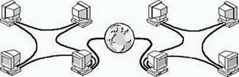

Глобалната компютърна мрежа може да се направи от различни компютри на принципа на локалните мрежи. Ако тя съдържа локални мрежи, един компютър от тази мрежа се избира като посредник на компютрите от мрежата и се свързва към глобалната мрежа. Такъв компютър се нарича сървър. Обикновено той позволява на другите компютри от мрежата да се свързват с други сървъри в глобалната мрежа, но не позволява на други компютри от глобалната мрежа да се свързват с компютрите от локалната мрежа. Затова ако даден потребител иска да обмени информация, той трябва да я предаде на съответния сървър, който обикновено е с по-голяма памет и капацитет отколкото останалите компютри в мрежата. Обичайно, процеса протича по следния начин: компютър от локалната мрежа предава необходимата информация на сървъра си, сървъра от своя страна предава тази информация на друг сървър и т.н., докато съответния сървър предаде пристигащата информация на компютър в друг локален сървър.

Възможността да общуваме с хора от други градове, друга държава или друга част от света, става благодарение на компютри и локални мрежи, свързани към световната мрежа. Най-обширната международна мрежа се нарича Интернет. Той обединява хиляди компютърни мрежи по целия свят. Интернет мрежата е огромно хранилище на информация и ресурси от всякакво естество. Всеки човек, свързан към интернет, е в състояние не само да ползва тази информация, а също и да публикува своя собствена информация в интернет.